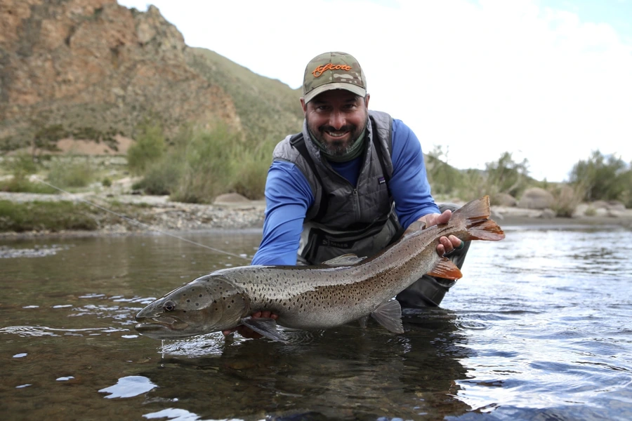

鱼类 · 动物界
哲罗鲑 Hucho taimen

生活在寒冷山溪中的大型鲑科鱼类，繁殖期体侧泛红，是淡水中的顶级掠食者，也是新疆喀纳斯“湖怪”传说的主角之一。
- 分类
- 门脊索动物门纲硬骨鱼纲目鲑形目科鲑科属哲罗鱼属
- 栖息环境
- 水温低、溶氧高的山溪、河流深潭和湖泊，夏季水温一般不超过 20 ℃
- 地理分布
- 欧亚大陆北部，包括俄罗斯西伯利亚、蒙古、中国东北黑龙江流域和新疆额尔齐斯河水系
- 保护级别
- IUCN 易危（VU）；中国国家二级保护动物
物种志
哲罗鲑体呈长梭形，吻部尖，口大，口内和舌上都长着尖锐的牙齿。体色背部灰褐或褐绿色，体侧银红，繁殖期体侧和腹部会泛起鲜艳的红褐色，因此当地人称它“大红鱼”。体表鳞片细小，侧线明显。成鱼体长一般 70–120 cm，体重 5–20 kg，最大记录体长可超过 1.5 m、体重可达 50 kg 以上。
哲罗鲑分布于欧亚大陆北部的寒冷河流和湖泊，包括俄罗斯西伯利亚、蒙古、中国东北的黑龙江流域和新疆的额尔齐斯河水系，喜欢水温低、溶氧高、水流湍急的溪流和深潭。它是肉食性鱼类，捕食鱼类、蛙类、水鸟和小型哺乳动物，是溪流生态系统中的顶级掠食者。繁殖期在秋季，亲鱼上溯到支流的砾石河床产卵，雌鱼可产数千至数万粒卵，产卵后多数亲鱼仍能存活并再次繁殖。由于过度捕捞、水坝建设和栖息地退化，哲罗鲑种群数量下降，IUCN 将其评为易危，中国将其列为国家二级保护动物。
形态与习性
- 食性肉食性，捕食鱼类、蛙类、水鸟和小型哺乳动物
- 体长一般 70–120 cm，最大记录超过 1.5 m
- 体重常见 5–20 kg，最大可超过 50 kg
- 寿命约 20–30 年
- 繁殖秋季上溯到支流砾石河床产卵，可多次繁殖
- 习性独居，领域性强，常守在深潭和急流交汇处伏击猎物
趣味知识
- 哲罗鲑在繁殖期体侧泛红，新疆当地渔民因此称它为“大红鱼”。
- 喀纳斯湖“湖怪”的传说，常被研究者认为与巨大的哲罗鲑有关。
- 它是淡水溪流中的顶级掠食者，会捕食水鸟甚至小型哺乳动物。